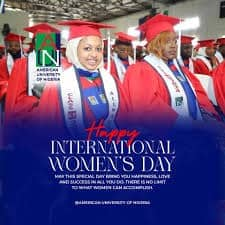

Ranar Mata ta Duniya a Yola
Murnar Nasarorin Mata da Karfafa su
Abin da Ake Mayar da Hankali: Gano da murnar nasarorin mata tare da wayar da kan jama'a game da daidaito tsakanin jinsi da hakkokin mata.
Bayanan Taron
Ana bikin Ranar Mata ta Duniya kowace shekara a Yola tare da ayyuka daban-daban don haskaka gudunmawar mata ga al'umma da kuma ƙarfafa daidaito tsakanin jinsi.

Ayyukan Taro
- Jawaban Farko: Daga fitattun shugabannin mata
- Tattaunawar Kwamitoci: Kan batutuwan mata
- Bikin Ba da Kyauta: Gano nasarori
- Horarwar Ƙwarewa: Zauren karfafa mata
- Nunin Al'adu: Murnar mata ta hanyar nune-nunen al'adu
Muhimman Batutuwa
- Hakkokin mata da kare su
- Karfafa tattalin arziki
- Ilimi da haɓakar sana'a
- Lafiya da walwala
- Jagoranci da shawarwari
Abubuwan Da Taron Ke Dauke Da su
- Nunin Kayayyaki: Nunin 'yan kasuwar mata
- Haɗin Gwiwa: Haɗaɗɗun dangantaka na ƙwararru
- Gwaje-gwajen Lafiya: Dubawa kyauta
- Jagoranci: Shawarwarin sana'a
- Taron Albarkatu: Ayyukan tallafi
Manufar Tasiri
- Kara wayar da kan mutane game da hakkokin mata
- Kara damar tattalin arziki
- Ƙarfafa hanyoyin tallafi
- Inganta samun albarkatu
- Kara shiga al'umma